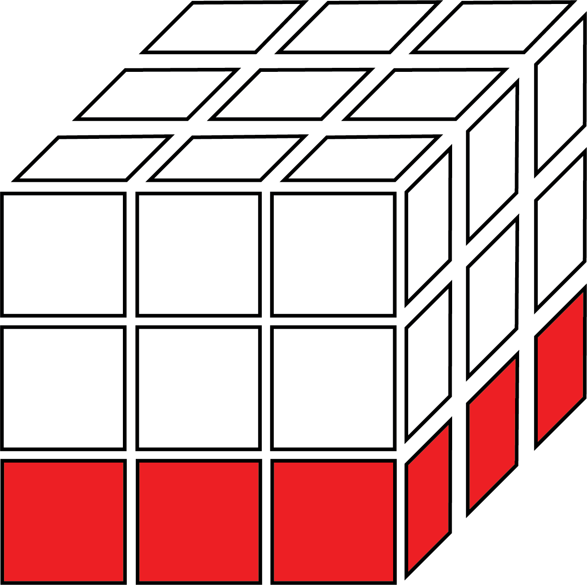
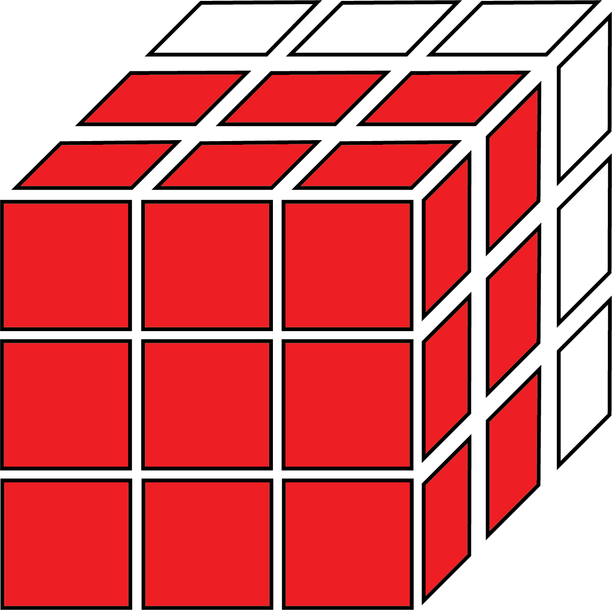

Rubik's Cube Notation:
To easily describe the moves on a Rubik's cube, we use a letter as notation; which corrosponds a perticular move relative to the orientation of the cube (usually last layer facing up unless otherwise specified). Some letters can also represent the action of turning the entire cube, or multiple layers at the same time, which will affect the orientation of the cube. Algorithms are almost always first learned as a series of moves in Rubik's cube notation.
In Rubik's cube notation, a letter will mean a 90 degree clockwise rotation of a face, and a letter followed by an apostrophe (or sometimes a lower-case i) is a 90 degree counter-clockwise rotation. (i.e. R is a 90 degree clockwise turn of the right face, while U' is a 90 degree counter-clockwise turn.) When getting used to Rubik's cube notation, make sure that you are not mixing up the direction of clockwise and counter-clockwise on each face, as opposite faces will have clockwise be in opposite directions. Failing to pay attention to the direction of the turn may lead to messing up your progress while learning a new algorithm. A letter followed by a 2" (i.e. F2) is a 180 degree turn. There are 270 degree turns are just a reverse 90 degree turn. Both counter-clockwise and clockwise 180 degree turns lead to the same position; however, an algorithm may specify a move such as L2' over L2 to indicate the best direction to turn in.
Basic Notation:
As there are 6 faces on a cube, each face of a Rubik's cube has a coresponding letter meaning a turn of that face. These faces are realitive to how you hold the Rubik's Cube. When doing algorithms, you must hold the cube with the centers in the same position that the algorithm pictures show. The six faces are notated as:
U (Up) is the side facing up.  D (Down) is the side facing the table/floor. L (Left) is the side facing your left.
R (Right) is the side facing your right. F (Front) is the side facing towards you. B (Back) is the side facing away from you.
Multi-Layer Turns:
(This (and everything after) is refering to western notation, as notation can differ internationally)
For each basic turn, there is also a multi-layer turn of the same face. A multi-layer turn, is a turn of both the side and the center slice nearest to it at the same time. Multi-layer turns are denoted by lowercase letters. On larger cubes with more layers, there may also be a number before the letter to notate the number of layers, but this is not relevant to the 3x3. Since center pieces cannot move relative to the rest of the centers, this move can to thought of as rotating the cube and turning the opposite side at the same time. Multi-layer turns are not nesscarry for the purpose of the Beginner's method, but can help with speeding up some algorithms on more complex and faster solving algorithms:
u is the top and center layers. d is the bottom and center layers. l is the left and center layers.
r is the right and center layers.
 f is the front and center layers.
 b is the back and center layers.
b is the back and center layers.
Slice Turns:
A slice turn is a turn of the center layer of the cube, effectively performing 2 opposite basic turns at the same time. Slice turns turn in the direction of the left, down, and front faces. These turns can also be modified with a '2' or apostrophe. The 3 different slice turns are as follows:
M (Middle), in the same direction as L. E (Equatorial), in the same direction as D. S (Standing), in the same direction as F.
Cube Rotations:
Cube rotations involve turning the entire cube. Any position can be solved without these moves, but you will often see them in algorithms as they can allow an algorithm to be more easily executed. Sometimes the cube rotation will be put into square brackets; however, in some types of notation, you may also see a basic move put into brackets. In this case, instead of doing the normal move, rotate the entire cube in the notated direction.
If you see a 'y' move at the start of an algorithm, you should recognize and start the algorithm with the cube already in the position after rotating, instead of regonizing the case and then rotating the cube. This is because I probably choose a different algorithm for the case after I made the image of the case, which may require a different orientation. Due lack of time, it is much more logical for me to add a letter to an algorithm instead of finding fifty images and rotating them.
Due to the nature of every piece other than 2 centers moving in a rotation, these moves cannot be easily shown highlighting every piece on the cube. The 3 possible cube rotations, which can also be modified with an ' / 2 like a basic turn, are:
- x or [r] - a rotation of the entire cube as if doing an R turn.
- y or [u] - a rotation of the entire cube as if doing a U turn.
- z or [f] - a rotation of the entire cube as if doing an F turn.